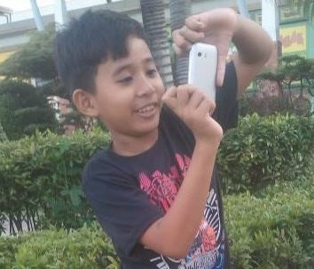

Hey everyone! I’m Peter John Candelasa, and I’m all about technology. At 19, I’m diving into the world of Bachelor of Science in Information System (BSIS) II, where I get to indulge my passion for everything tech-related

Chapter 1
"My Childhood"
My Internet Journey:Finding Connection Without Gadgets When I was young, using the internet seemed impossible. I didn't have gadgets or access to cyber cafes. But on social media, like Facebook, I could still connect through tags and mentions.
Even though it was tough, these moments made me curious. They taught me to keep trying, even when things were hard. Now, as I easily use the internet, I remember those tough times. They showed me how to be determined and clever, helping me
find connection even when it seemed impossible.
Chapter 2
"My High-School Life"
High School Discovery: Exploring Creativity Online In high school, I got my first taste of the internet’s creative potential. With access to computers and mobile phones, I dived into image and video editing. Despite being a beginner, I eagerly
experimented with different tools and techniques, gradually honing my skills. These experiences sparked a passion for creativity that continues to shape my journey today.
Chapter 3
"My Senior-High Life "
Senior High: Boosting My Tech Know-How During senior high, my tech skills got a major boost. I dove into computer setup and servicing, seizing every opportunity to learn. From troubleshooting to hardware installation, each experience expanded
my knowledge and opened new doors in the world of technology.
Chapter 4
"My College Life "
In college, my knowledge blossomed further. I delved deep into computer programming and mastered the art of image manipulation. As I honed my skills in video and image editing, my experience broadened, enriching myexperiences broadened, enriching
my understanding and refining my creative abilities.
Chapter 5
"CDRRMSU "
College Adventures: Serving in Disaster Response Throughout my college journey, I embarked on a unique path by joining the Campus Disaster Risk Reduction Management Service Unit. Not only did I participate in rescue and response efforts, but I
also took charge of the documentation section. In this dual role, I had the privilege of not only assisting in ensuring the safety of students and teachers but also meticulously documentating our activities. This experience not only enriched
my college life but also instilled in me a profound sense of responsibility and preparedness for emergency situations.
Chapter 6
"MARC "
Continuing my college adventures, I joined the Malindang Amateur Radio Club (MARC), a vibrant community dedicated to radio amateurism. Alongside my academic pursuits, I immersed myself in learning about radio communication and amateur radio operations.
Being part of MARC provided me with invaluable hands-on experience, allowing me to expand my knowledge and skills in this fascinating field. Through MARC, I forged lasting connections with fellow enthusiasts and contributed to our shared passion
for radio communication.
Chapter 7
"PEER FACILITATOR "
In addition to my involvement with MARC and CDRRMSU during college, I also joined the Teacher Student Peer Facilitator organizaion. This role allowed me to contribute to supporting individuals facing mental and psychological challenges within our community.
As part of this group, I participated in responding to people in need, offering guidance, support, and a listening ear to those experiencing difficulties. It was a humbling experience to be able to provide assistance and comfort to others
during their times of need.
Despite my passion for MARC and the Campus Disaster Risk Reduction Management Service Unit (CDRRMSU),family matters eventually led me to make the difficult decision to resign. Prioritizing my family and academic pursuits became paramount, prompting
me to step back from these commitments. Though challenging, this choice allowed me to focus on fulfilling my familial responsibilities while continuing to pursue my education with dedication and perseverance.
In the midst of resigning from both the MARC and CDRRMSU organizations, I found myself heartbroken. These groups had become not just commitments but extensions of my identity and purpose. As I made the difficult decision to step back, I couldn't
help but feel a sense of loss. In those moments of sorrow, the lyrics of "Bayan Ko " resonated deeply within me. The song's poignant words spoke to my inner turmoil, capturing the pain of sacrificing something cherished for the greater
good of my country and fellowmen.
"Bayan Ko "
Ang bayan kong Pilipinas
Lupain ng ginto't bulaklak
Pag-ibig na sa kanyang palad
Nag-alay ng ganda't dilag
At sa kanyang yumi at ganda
Dayuhan ay nahalina
Bayan ko, binihag ka
Nasadlak sa dusa
Ibon mang may layang lumipad
Kulungin mo at umiiyak
Bayan pa kayang sakdal-dilag
Ang 'di magnasang makaalpas
Pilipinas kong minumutya
Pugad ng luha at dalita
Aking adhika
Makita kang sakdal laya